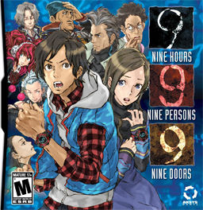

Story
Nine people have been kidnapped by a mysterious person called Zero and are forced to participate in a survival game called the "Nonary Game". Each player has a bracelet numbered 1–9, which they must use to pass through doors numbered 1–9 to reach the exit before 9 hours run out and the ship in which they are in sinks. Various puzzles must be solved in order to advance through the ship and reach the exit, while uncovering the mysteries behind the Nonary Game.
[from VNDB]
Information

[from VNDB]
Steam


9 Hours 9 Persons 9 Doors
Nine people have been kidnapped by a mysterious person called Zero and are forced to participate in a survival game called the "Nonary Game". Each player has a bracelet numbered 1–9, which they must use to pass through doors numbered 1–9 to reach the exit before 9 hours run out and the ship in which they are in sinks. Various puzzles must be solved in order to advance through the ship and reach the exit, while uncovering the mysteries behind the Nonary Game.
[from VNDB]
Official English Translation: Yes
Length: 10-30 hours
Content: Fear of Death, Mystery, Ship, Suspense, Trapped, Violence
Available at: Steam
Prequel: n/a
Sequel: Virtue's Last Reward
More Information: VNDB
Steam